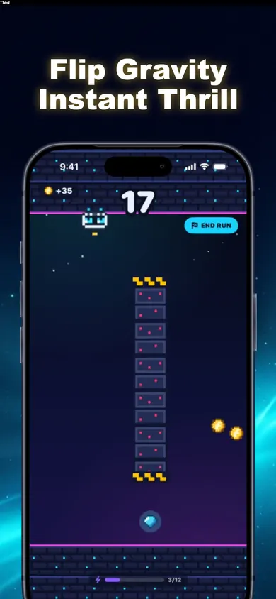

One thumb.
Three ways
to play.
A short break doesn't need a long tutorial. Fluxo flips gravity with a tap. Pick the mode that matches what you want from this run.
Play the six-gate browser sprint ↓Full game playable free · optional one-time premium
iPhone · iOS 18 or later

TAP. FLIP. REPEAT.Clear the six gates.
Start on the floor. Flip to the open rail before the barrier reaches the pilot. Some gates reward holding your position.
Ready on the floor.
Play Fluxo on iPhone for mid-air flips and changing sectors.
What kind of break is this?
These are suggested starting modes, not a skill test. Change your choice any time.
Get a feel for the timing.
Zen offers relaxed practice with no wipeouts. Use it to see how a tap changes your path before moving to a score-focused run.
Your first break, mapped out.
Before the run: choose comfort.
The app lists controls for screen shake, reduced effects, music, sound and haptics. Pick the settings you want before starting. A one-tap control doesn't make a fast game visually quiet.
First attempt: watch the path.
Tap to reverse gravity between floor and ceiling. The first run includes a TAP TO FLIP prompt. You can re-flip mid-air; the aim is timing your route past obstacles, not tapping as fast as possible.
Next attempt: change one thing.
Try a different flip timing or switch mode. Classic is the core run; Hyper raises the speed. The listing describes instant PLAY AGAIN restarts, so a wipeout needn't mean another trip through menus.
When your break ends: finish.
Decide your stopping point before you start: one attempt, a few practice flips, or a real-world timer. This is an endless runner, not a chapter you need to complete.
Zen, Classic or Hyper?
| Mode | What changes | Start here if… |
|---|---|---|
| Zen | Relaxed practice; no wipeouts. | You want to learn the flip. |
| Classic | The core run. | You want the standard challenge. |
| Hyper | Faster speed; double gold. | You already like the controls and want more pace. |
No mode guarantees a particular session length. This guide suggests how to approach a break; it does not measure play time.
Worth a look if…
You like quick retries, precise timing and getting a little further on the next run. New sectors change the rules every eight points, so the same control has different situations to solve.
Skip it if…
You want a story with an ending, a turn-based puzzle, or a completely static screen. Fluxo is a moving arcade runner. Reduced effects and Zen change parts of the experience, not the genre.
The details before you download.
Does Fluxo need an account or internet?
The current listing says no account, no login and no internet required for play. Download it while connected and check it on your own device before relying on offline play.
Is premium a subscription?
No. The listing describes optional one-time premium: double gold, free revives, no house-ad breaks and the Golden Fluxo pilot. It also says the full game is playable free. Check the App Store or in-app purchase screen for your local price.
Is one-tap the same as easy?
No. One-tap describes the input. Obstacles, timing and speed still create a challenge. Zen is the listed practice mode without wipeouts; Hyper increases the pace.
Is this an independent review?
No. Honest Little Apps publishes this guide to introduce its own app. The screenshot is from the listing; the mode suggestions are editorial guidance, not measured player outcomes.
Pick a mode. Try the flip.
No account setup. Start with the free game and decide whether the one-tap loop is your kind of break.
Start on your iPhone